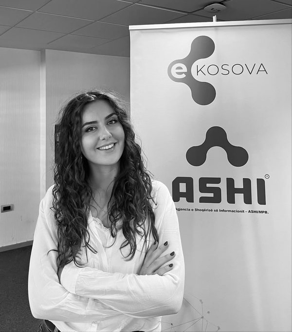

Vienna FoodPrint
App prototype and policy frameworks to cut Vienna's material footprint through the food system.
1st place · ~390,000 t potential annual reduction
Open to remote roles & international opportunities
Data Science & Data Engineering
I build predictive models and the data pipelines that feed them. Currently working on Kosovo's national government Data Hub.

Explore
Tap a card to open it.
About
I work at Kosovo's Information Society Agency (ASHI), on the national government Data Hub, working with metadata and government data across institutions, and on the national digital identity program. Before that, I drafted public finance strategy documents at the Ministry of Finance.
I hold an MSc in Business Analytics (Merit) from Central European University in Vienna. My capstone was an end-to-end payment-failure prediction system for a European public transport operator, from a leakage-safe feature pipeline to a real-time and batch decision framework. It was graded A.
I'm looking for remote data science and data engineering work, especially where data meets public services.
Work
Five areas. Tap one to see the projects.
Built a payment-failure prediction system for a European public transport operator.
More work, by area
Turning raw data into clean, reliable inputs. ETL, feature pipelines, cloud platforms, orchestration.
Working on the government Data Hub, built on DataHub, the open-source metadata platform originally developed at LinkedIn. My focus is metadata: describing, organising, and documenting datasets from Kosovo's public institutions so they can be found, trusted, and reused.
# Example metadata entry (illustrative, not real government data)dataset: business_registry.registered_businesses description: Registered businesses by municipality and sector, updated monthly owner: institution: Example Agency steward: data team tags: [economy, open-data] glossary_terms: [Business, Municipality] classification: public update_frequency: monthly lineage: upstream: [registry_db.business_entries] downstream: [dashboard.business_activity]
Classification, gradient boosting, deep learning, and models built to fit a real business decision.
Forecast weekly sales for a Rossmann drugstore using real retail data (Kaggle, 2013–2015), comparing SARIMA, ARIMA, and XGBoost with lag and promotion features.
Built and compared models to predict Airbnb listing prices in Berlin using Inside Airbnb data: OLS, LASSO, Elastic Net, Random Forest, and Gradient Boosting, evaluated on out-of-sample RMSE and R². Tested how well the models hold up over time, on later Berlin data, and in a different market, on Geneva listings.
View on GitHub →Building AI agents on top of large language models that can plan and complete tasks for users.
A trip planner built with the OpenAI Agents SDK, where a planner agent delegates to two specialist agents. It started as a team project at the CEU AI Engineering hackathon, and I then rebuilt and extended it as my own standalone version.
# How the agents connect (summary of the setup)model: litellm/gemini/gemini-2.5-flash # swap in .env: OpenAI, Claude, Bedrock guardrail: travel-topic input classifier trip_planner: memory: SQLite session per chat tools: - destination_expert # agent as tool - logistics_agent # agent as tool destination_expert: rag: ChromaDB, 25-destination guide logistics_agent: tools: [open_meteo_weather, frankfurter_currency] ui: Chainlit tests: pytest, offline, GitHub Actions on every push deploy: render.yaml
Regression, causal analysis, and survey data, written up as clear reports for decision-makers.
Tested whether expanding internet access reduces unemployment across countries, using World Bank panel data and regressions with country and year fixed effects. The average effect was not statistically significant, but splitting by income level showed the effect is about four times stronger in high-income countries, suggesting the benefits of internet access depend on a country's institutions.
View on GitHub →Analysed 1,683 survey respondents across Balkan countries with a probit model in Stata, testing 17 socio-demographic, economic, and political variables. Transparency, local authorities, and rule of law were the strongest significant predictors.
Award-winning app prototypes and product pitches, from idea to working demo.
In a team of three, we worked on a challenge for the Municipality of Vienna: cutting the city's material footprint from 14t toward the EU target of 7t per capita through the food system.
As CEO of a five-person team, I led the concept and pitch for NovoFin, a mobile app offering microloans and digital banking to people underserved by traditional banks in emerging markets. Our pitch won first place in the course's pitch competition.
Experience
Tap a role for details.
Information Society Agency (ASHI), Republic of Kosovo
MSc Capstone · Client: Rebel Solutions Group
Built a payment-failure prediction system for a European public transport operator: a 42-feature leakage-safe pipeline, a real-time logistic regression for gate checks, and a nightly XGBoost model (AUC 0.797). The decision framework recovered 27.6% of baseline uncollected revenue.
SDG Watch Austria · Contract
Won Challenge 3 (Material Footprint Under 7t Per Capita) at CEU's Hackathon as part of a cross-disciplinary team of three. Modelled food system interventions to reduce Vienna's material footprint from 14t to the EU target of 7t per capita, projecting 390,000 tonnes of potential annual reduction.
Ministry of Finance, Labor and Transfers of Republic of Kosovo
Drafted inputs for the Public Finance Management Strategy (2022–2026), drawing on SIGMA, PEFA, and IMF assessments; drafted the Financial Action Plan (2025–2026); developed dashboards and Excel-based visualizations to communicate key findings.
GAP Institute for Advanced Studies
Supported quantitative analysis on public finance and economic governance topics using survey and administrative data, including regression analysis and visualisations for publications.
Kantar Group & Ipsos
AIESEC — Economic Empowerment
Recruited and prepared volunteers for economic empowerment programmes.
Awards
Two competitions, two wins.
App prototype and policy frameworks to cut Vienna's material footprint through the food system.
1st place · ~390,000 t potential annual reduction
Microloans and digital banking app concept with market analysis, prototype screens and a business plan.
1st place · CEO of a five-person team
Education
Tap a degree for coursework.
Central European University, Vienna
Data Engineering
Machine Learning & AI
Analytics, Causal Inference & Forecasting
Programming & Communication
Capstone
University of Pristina, Kosovo
Thesis: Determinants of Trust in Government
OTH Regensburg, Germany
1st place · Digital Finance pitch (NovoFin)
Bonn-Rhein-Sieg University of Applied Sciences, Germany
Skills
Certificates
Contact
Open to remote data science and data engineering roles and contracts. Based in Kosovo, working in Central European Time.